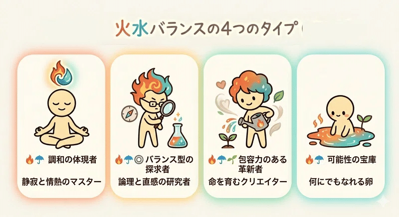
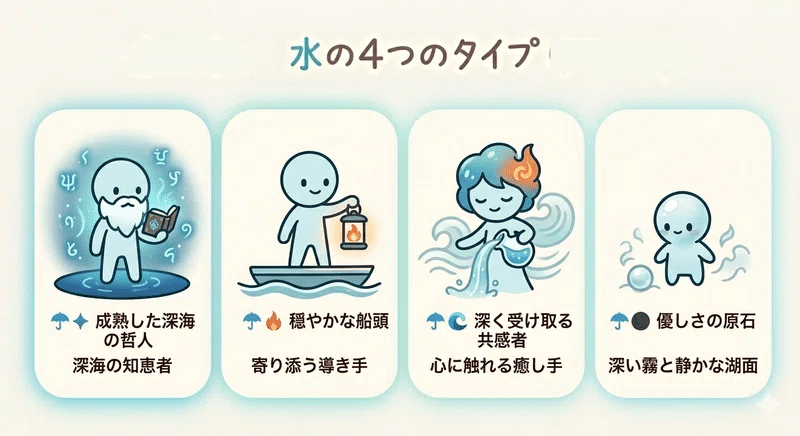

この夫婦に起きたこと
結婚10年前「この人とは絶対結婚しない！」と、妻の日記に書かれていた📖
▶
結婚15年目散歩中、ギュッと抱きついて来てくれる💕
変わったのは、性格じゃありません。
お互いの「性質」を知って、翻訳し合えるようになったことです。
真逆の性質の夫婦が、結婚15年かけて
実践・研究してきた「火水性質分析」です。
まずは、自分の「火と水」のバランスを知ることから。
変わったのは、性格じゃありません。
お互いの「性質」を知って、翻訳し合えるようになったことです。
3つの、だいじな考え方
火は水になり、水は火にもなれる。性質は固定したラベルではなく、時期によって表に出る側が変わる、循環するものです。
「火の人」「水の人」に分けきれる人はいません。誰の中にも火と水の両方があって、そのバランスが人それぞれ違うだけです。
どちらかに偏るのは、育った環境や社会の恐れ・不安への生存戦略。自分の恐れに気づいて安心を取り戻すと、本来のバランスが戻ってきます。
火と水のバランスで分かれる、12のキャラクター



記事は、1冊の本に向けて積み上げています

たけちゃんのタイプ：🔥✦ カリスマ太陽リーダー
（成熟した炎の指導者）
妻との結婚15年のやりとりを経て、「火水性質分析」を研究・実践しています。幼い頃は泣き虫で引っ込み思案だった僕と、活発で学級委員長だった妻。長い年月の中で、まるでエネルギーを交換してきたように性質が入れ替わってきました。その実体験が、この分析の土台です。
大事にしているのは、強い刺激より「安心」。恐れや不安ではなく、安心をベースに、本来の自分に戻っていくこと。それが、夫婦にとっても、暮らしにとっても、幸せの鍵だと考えています。
心体調整塾 たけちゃん